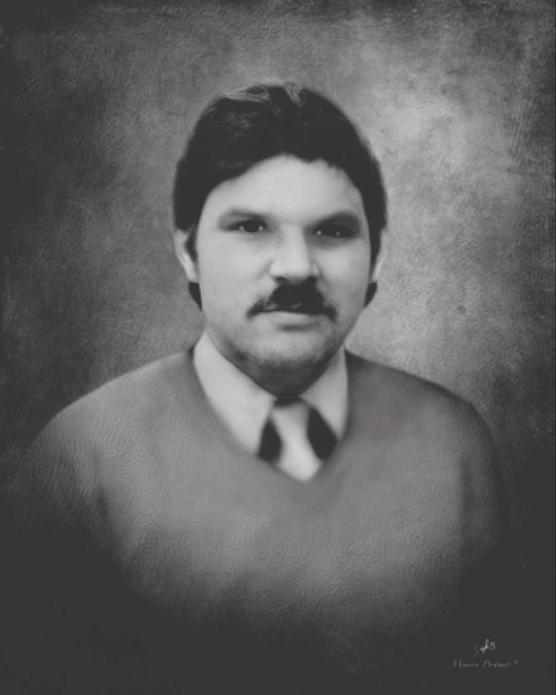

Ronald Arthur Huston
Home
All About Dad
Memories
Gallery

Ronald Huston
This site is in dedication to Ronald Arthur Huston.
Ronald was a loving husband, father, and bombom. He was loved beyond measures and he will be missed dearly.
Visit Obituary Here